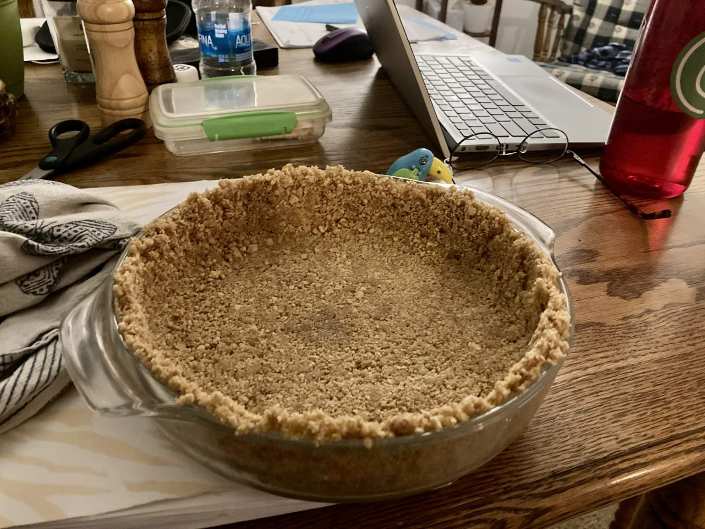
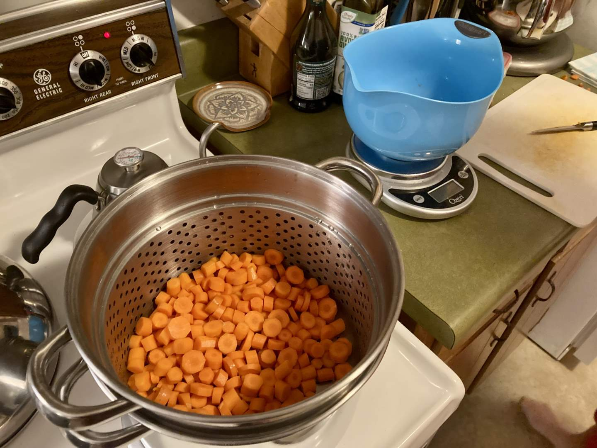
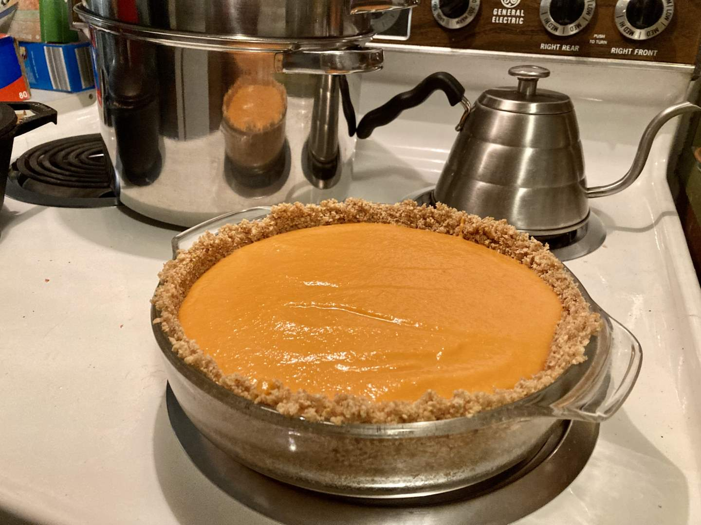
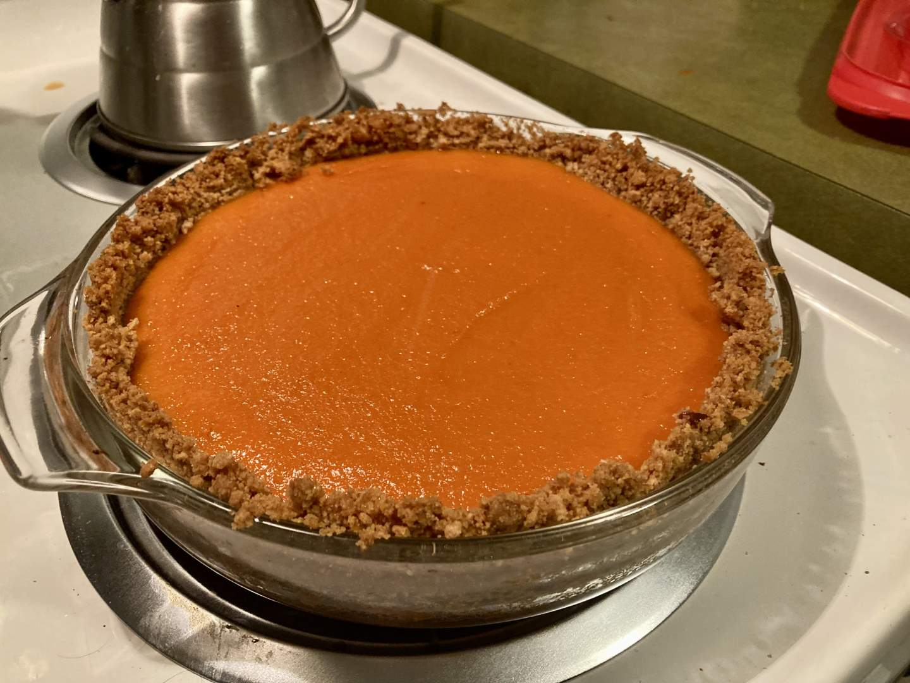

Pie 14: Honey Carrot
2023-09-28Recipe from Everyday Pie.
Taste:
Difficulty:
Vibes:
Suggested pairing: tilapia with rice & lots of cilantro

Welcome back to another week of “what orange root vegetable pie is that?” In a world obsessed with pumpkin, it is all too easy to overlook the other fantastic orange vegetables that grow in or on the ground and are delicious in pie. We have already highlighted one such veg on this blog: the sweet potato. Another underrated cousin [Ben: in that they are all three dicots] of that sunset-colored squash is the carrot. Turns out mashed carrots aren’t just for babies. They are also well-suited to the palates of adults, particularly when combined with honey, vanilla, and a graham-cracker crust.
This week was hard for both of us in different ways. I fell ill last Saturday and was isolated from Ben for a few days, during which time I slept, drank tea, and wasted away. Meanwhile, Ben tackled his first week of exams in medical school. The intensity of the exams gradually increased as the week progressed, and come Thursday, neither of us was feeling our best. I had lost my voice and Ben had a multi-hour exam the next day.
But the pie show must go on. To ease our journey, I determined to make a pie with ingredients we already had--a significant limitation. When I saw a partially used bag of carrots in the fridge, I did a quick Google search to confirm that carrot pies were in fact a thing. I did not want to make a pie that pretended to be something else, as was a common theme amongst food bloggers who proposed carrot pie as a worthy substitute for pumpkin pie. Therefore, I chose a recipe without the typical pumpkin pie spices in the filling. I wanted the carrot flavor to stand proudly on its own two legs.

First, the carrots had to be steamed (contrary to Ben’s initial mental image of a pie with thin, layered strips of uncooked carrot). After cleaning, peeling, and slicing a pound of carrots, I tossed them into a steaming basket over boiling water. While they softened, I prepared the crust. It was the classic graham cracker crust, but with added vanilla, cinnamon, and nutmeg, to add a Biscoff-like flavor to the neutral graham. The carrots eventually became stab-able, so it was time to stab them a lot, very quickly, until they were as smooth as possible. Naturally, I turned to an immersion blender for the most efficient carrot destruction.
I poured the puree into the crust and asked Ben to stop studying and take a picture. After the pie was baked to perfection, we let it cool overnight in the fridge. The next day I went back to work and Ben took his final exam of the week, inaugurating a long weekend. We loaded the pie into our car and set off to visit my family in Tennessee.
This trip allowed more people to try the pie, which turned out to be important. Like our Green Tomato Pie, it resembled another better-known dish. Unlike that previous pie, everyone who tried the honey carrot pie enjoyed it! Not only was the carrot flavor notable yet mellow, the filling was accompanied by probably the best crumb crust we’ve yet made. Not bad for a two-dollar bag of old carrots.